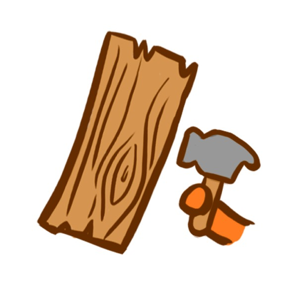
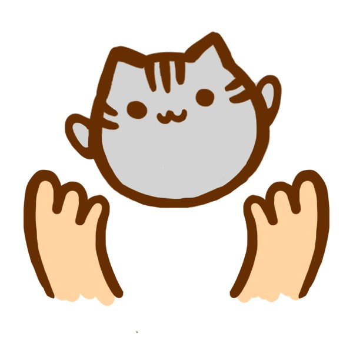

Somos Taller Azotea, un espacio creativo donde la madera y la cerámica se encuentran para dar vida a objetos únicos, funcionales y llenos de personalidad.
Trabajamos principalmente con madera recuperada de muebles en desuso, transformándola y combinándola con cerámica y otros materiales para crear piezas utilitarias y decorativas hechas a mano.


Nos inspira lo cotidiano, los pequeños detalles y, por supuesto, los gatos, que se han convertido en una parte importante del universo de Taller Azotea.
Creemos en crear objetos con historia, hechos con tiempo, dedicación y mucho cariño. Cada pieza pasa por un proceso artesanal, por lo que puede tener pequeñas variaciones que la hacen única e irrepetible.
Hecho con tiempo, dedicación y mucho cariño — Taller Azotea.